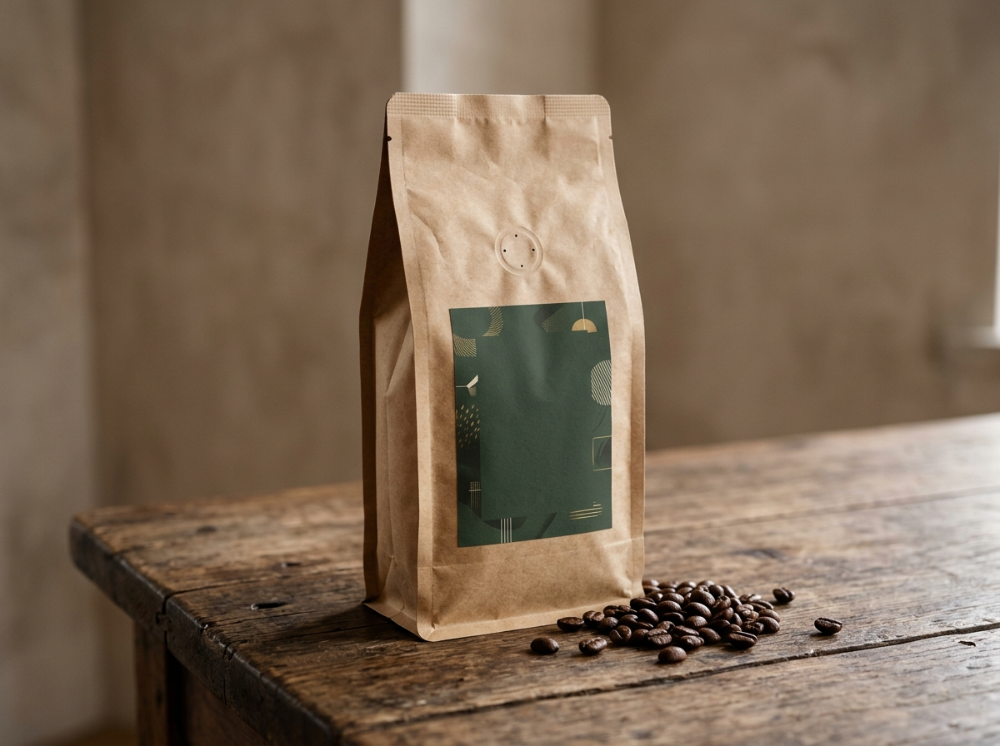

The roastery café, where every cup is brewed a few steps from the roaster.
Ember & Bean began with a single secondhand drum roaster and a simple belief: great coffee should be traceable, fairly traded and roasted fresh. What started as weekend roasting for friends has grown into a neighbourhood roastery and café.
We buy directly from small farms and cooperatives, paying well above Fairtrade minimums. We roast in small batches several times a week, so the coffee you take home is days old, not months.
The Coffee Range

Every bag is roasted to order and sealed with a one-way freshness valve.
Coffee
Origin & Roast
Tasting Notes
250g
1kg
Morning Ember
Brazil & Colombia blend Medium-dark
Dark chocolate, toasted hazelnut, caramel
$14
$48
Yirgacheffe Washed
Ethiopia, single origin Light
Jasmine, lemon zest, peach
$18
$62
Huila Reserve
Colombia, single origin Medium
Red apple, brown sugar, cocoa
$16
$55
Kiambu AA
Kenya, single origin Medium-light
Blackcurrant, grapefruit, honey
$19
$66
Midnight Espresso
Espresso blend Dark
Molasses, roasted almond, bittersweet cocoa
$15
$52
Quiet Hours Decaf
Colombia, sugarcane process Medium
Toffee, orange peel, milk chocolate
$16
$55
Prices are indicative and in USD. Ask about our monthly subscription: save 10% on any recurring order.
Brewing Tips
Good coffee is mostly about a few simple variables. Start with these, then adjust to your taste.
Pour-over
1:16 ratio (20g coffee to 320g water). Water at 93–96°C, medium-fine grind. Bloom for 30 seconds, then pour in slow circles. Aim for a 3-minute total brew.
French Press
1:15 ratio, coarse grind, water just off the boil. Steep for 4 minutes, break the crust, skim, and plunge gently.
Espresso
18g in, 36g out in 25–30 seconds at 93°C. If it tastes sour, grind finer. If it tastes bitter, grind coarser.
Grind fresh, just before brewing.
Weigh your coffee and water with a scale for consistent cups.
Use filtered water, since your cup is over 98% water.
Store beans in an airtight container away from light and heat. Don't refrigerate them.